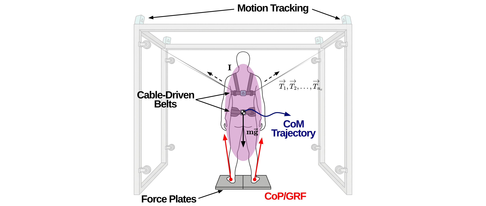
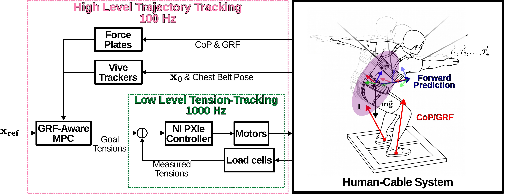

Ground Reaction Force-Aware Model Predictive Control for Underactuated Upright Physical Assistance


Motivation & Abstract
Current assistive exoskeletons and rehabilitation robots are fundamentally limited by their inability to predict human volitional joint torques. To guarantee stability, these systems typically pre-compute trajectories that satisfy ZMP stability constraints—then enforce them via stiff reactive tracking. This approach fundamentally treats all deviations from the planned trajectory as disturbances which can counteract human intent.
This paper presents GRF-MPC (Ground Reaction Force-Aware Model Predictive Control), a proactive control framework for underactuated upright physical assistance. By integrating live GRF and center of pressure (CoP) measurements directly into a single-rigid-body centroidal dynamics model, GRF-MPC predicts Center of Mass evolution without estimating internal joint torques or full-body multibody kinematics. At each timestep, a quadratic program optimizes assistive cable tensions over a receding horizon while strictly enforcing tension bounds in under 1 ms, comfortably enabling real-time 100 Hz replanning.
Deployed on the cable-driven Robotic Upright Stand Trainer (RobUST) across nearly 300 human-subject trials, an underactuated 4-cable GRF-MPC was evaluated against a fully actuated 8-cable Cartesian impedance baseline. Operating with half the actuators, GRF-MPC reduced peak planar CoM error during impulse perturbations by 19.6%, lowered dynamic lunge tracking error by 24.1%, required 28.7% less net mechanical work, and permitted a 45.9% larger normalized volitional workspace.
System Architecture


Dynamic Tracking (Lunge Task)


Summary Video
BibTeX
@article{Biskup2026,
title={Ground Reaction Force-Aware Model Predictive Control for Underactuated Upright Physical Assistance},
author={Biskup, Darren and Yu, Jeonghan and Yu, Zibo and Agrawal, Sunil K.},
journal={IEEE Robotics and Automation Letters (RA-L)},
year={2026},
publisher={IEEE}
}